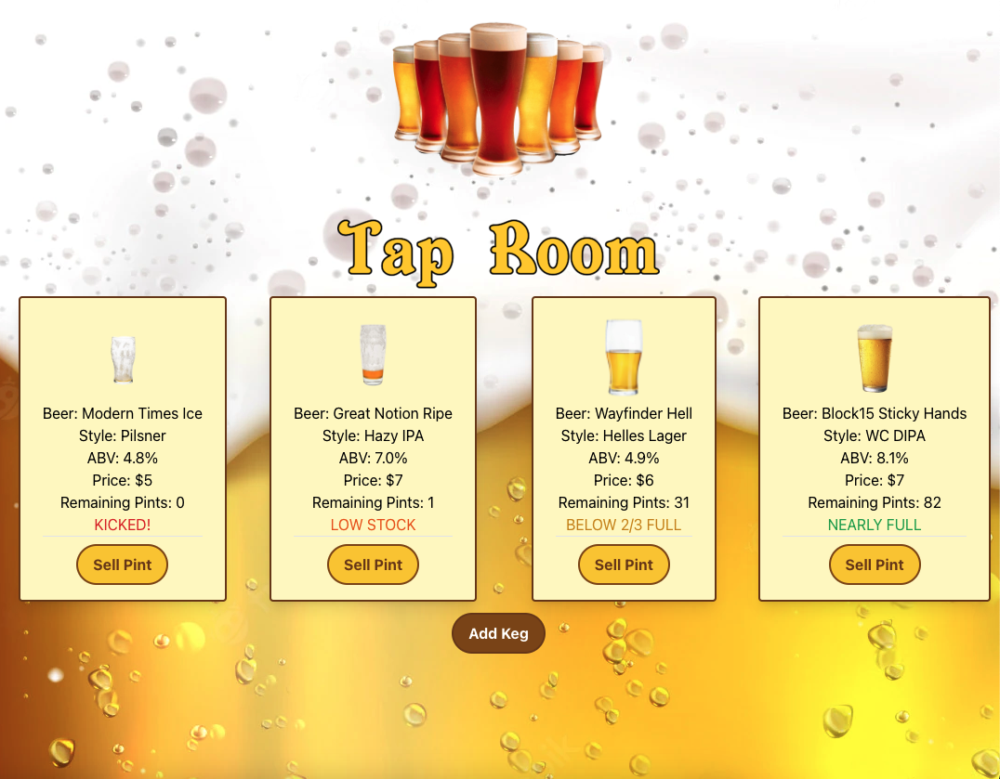
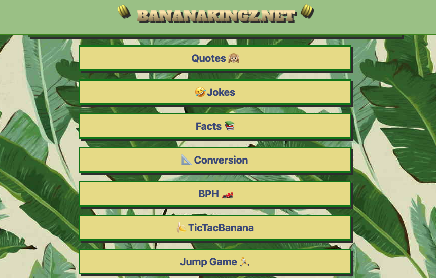
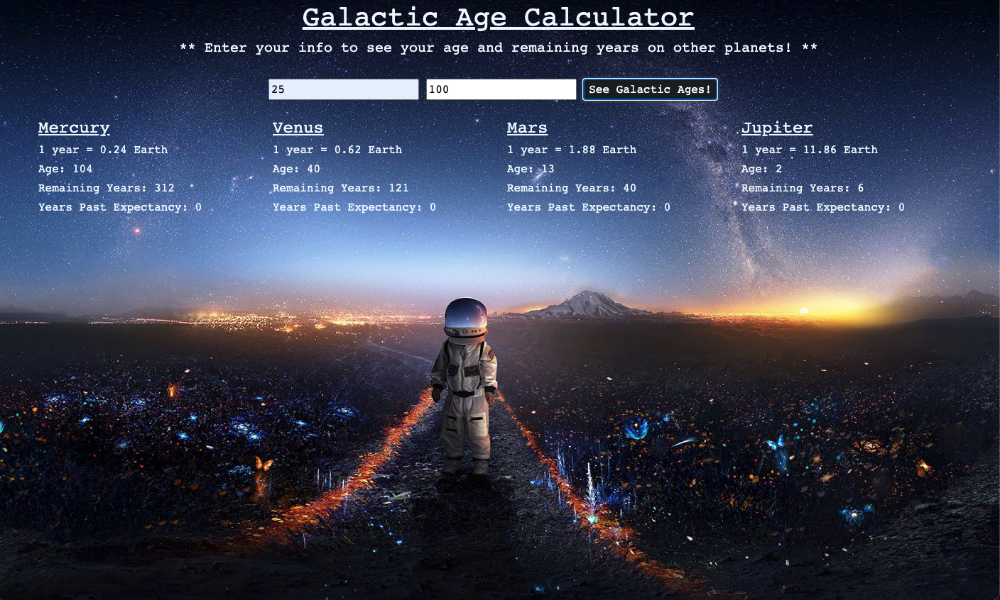
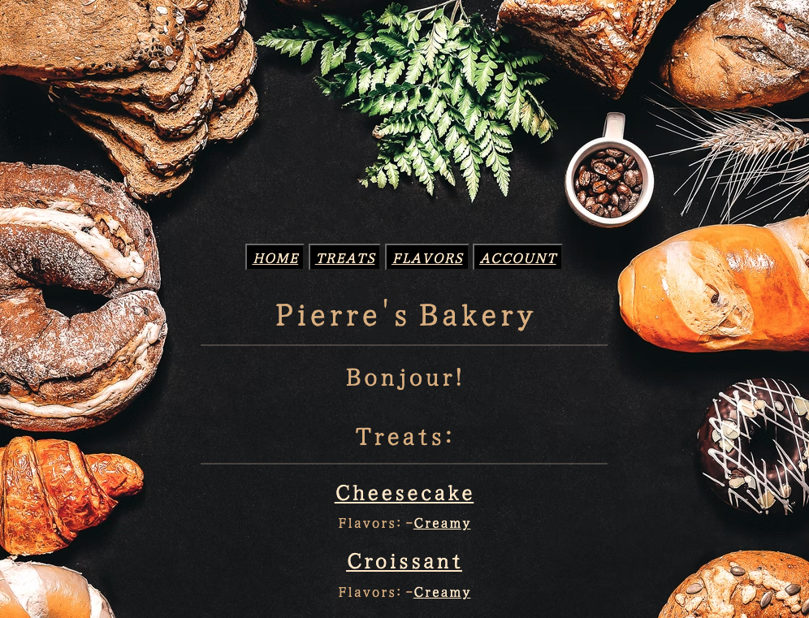
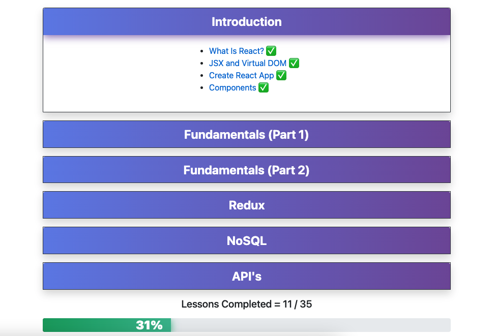
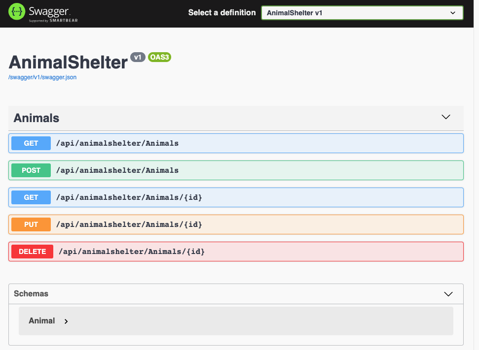
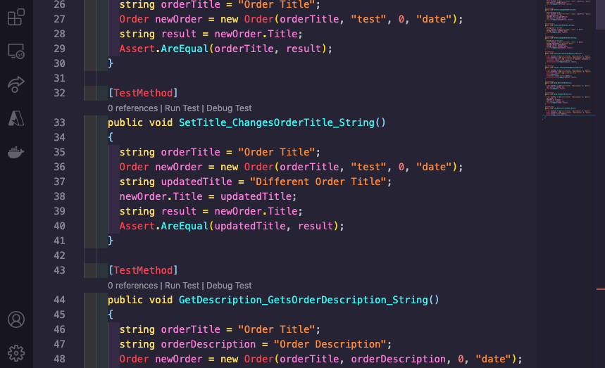

about me
hey, i'm jase, a full-stack software engineer currently attending epicodus coding bootcamp. i'm an avid nba and formula 1 fan, movie buff, gamer, and beer geek. as a nature lover, i do my best to reduce my carbon footprint by adhering to a minimalistic, plant-based lifestyle.
PROJECTS
javascript
tap room
react app to manage tap room inventory
tech used: javascript, react, create-react-app, npm, webpack, html and tailwind css
githubbanana kingz
web app featuring banana related games, jokes, quotes and more.
tech used: javascript, jquery, npm, webpack, P5, html, css and yacck
githubgalactic age calculator
fully jest tested calculator to determine your age and potential remaining years on other planets
tech used: javascript, jquery, jest, npm, webpack, html, css and bootstrap
githubcurrency exchanger
currency exchange app utilizing an api to convert usd into 161 different currencies
tech used: javascript, jquery, webpack, html, css and bootstrap
githubC#
pierre's bakery
mvc application with restful routing, user authentication, code-first database, and full crud functionality for authorized users.
tech used: C#, asp. net core, identity, entity, mysql, razor, cshtml, css and bootstrap
learn to react
mvc app built to complement the epicodus react curriculum. utilizes user authentication and a sql database full of module specific boolean values to track user progress throughout the lessons
tech used: C#, . net core, javascript, entity, identity, sql, razor, cshtml, css and bootstrap
animal shelter api
mvc restful web api with a code-first database, full crud functionality, swagger documentation, and paginated results.
tech used: C#, asp. net core, entity, mysql, and swashbuckle
vendor order tracker
mvc application practicing tdd with mstest
tech used: C#, . net core, mstest, razor, cshtml, css and bootstrap
background
i was born and raised in concord, nh. while there, i spent 8 years working for the grappone automotive group. starting in the detail center, i quickly worked my way up to become a key member of the used inventory team. i attended manchester community college's automotive technology program for 3 semesters before realizing i preferred it more as a hobby than as a career. after tiring of the auto industry and my home state, i knew it was time for a change. at the beginning of 2019, i packed my car and headed for the west coast. upon landing in oregon, i pursued a job in the bustling portland beer industry. i quickly found work as a draft technician at northwest draft. during my time there, i attended the micro-matic dispense institute in ca where i learned how to install a variety of different draft systems. after being laid off due to the ongoing covid-19 pandemic, i took advantage of the gig work wave before making the decision to enroll at epicodus.
hobbies
nba
i love the fast paced play and indiviuality of basketball. it seems like every player brings something unique to the court. while the trailblazers are my team, i'll watch anyone play as long as it's a competitive game.
favorite players
damian lillard
ja morant
anthony edwards
FORMULA1
easily the nerdiest sport there is. it takes a long time to understand all the intricacies of f1, but watching drivers race bumper to bumper at speeds over 200 mph is something everyone can enjoy.
favorite drivers
lando norris
daniel ricciardo
fernando alonso
film
my love for cinema began when i got my first job at a movie theater in 2006. my friends and i got to see every new film for free. that's a huge deal when you're a broke a high school kid. and while movies at home are fine, there will always be something special about the theater for me.
favorite directors
quentin tarantino
christopher nolan
martin scorsese
GAMES
my partner and i love couch co-op. we've played pretty much everything we can find together. when i do have time to play solo, i prefer open world adventures. i'm a sucker for side quests.
currently playing
cyberpunk 2077
tiny tina's wonderlands